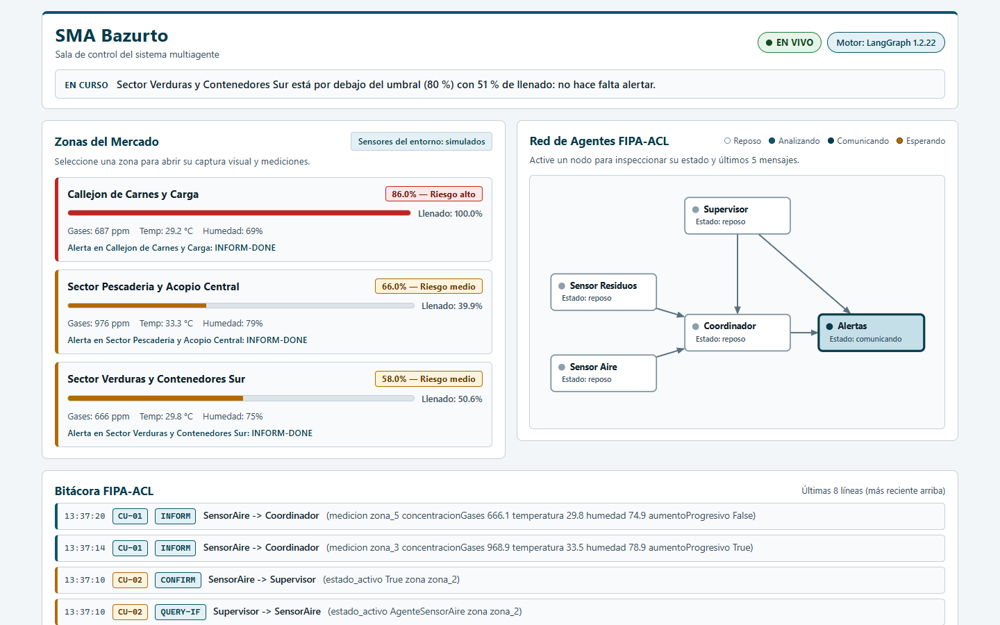
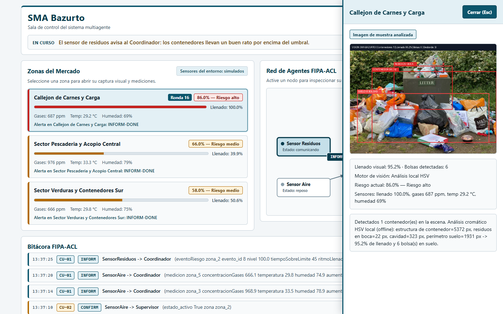
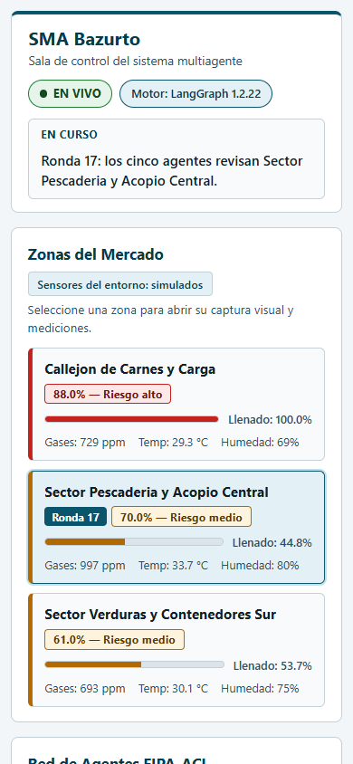

Los 5 agentes
Cada agente desempeña un rol de la organización SMAMonitoreoBazurto dentro del
entorno MercadoBazurto y se comunica por mensajes FIPA-ACL persistidos en SQLite:
AgenteSensorResiduosMonitorCondicionesAmbientales- Mide el nivel de llenado, inspecciona imágenes del contenedor (con Gemini o análisis HSV local) y evalúa persistencia temporal antes de publicar un evento de riesgo.
AgenteSensorAireMonitorCondicionesAmbientales- Mide gases CO2, temperatura y humedad en cada ronda, registra el historial en base de datos y detecta aumentos progresivos.
AgenteCoordinadorCoordinador- Consulta eventos, calcula el riesgo por zona, ordena el ranking de prioridad y delega la emisión de alertas cuando existe un evento de riesgo.
AgenteAlertasEmisorAlertas- Recibe la solicitud del Coordinador, rechaza alertas duplicadas en la misma zona o emite el aviso comunitario y reporta su confirmación.
AgenteSupervisorSupervisor-
Audita con
QUERY-IFla atención de eventos, la confirmación de alertas y la salud del sensor de aire, registrando incidencias y solicitando acciones correctivas.
Capturas reales de la Sala de control
Las siguientes imágenes provienen de la aplicación ejecutándose localmente en Python con FastAPI, LangGraph y transmisión en vivo por Server-Sent Events (SSE).

CU-01 y CU-02. Captura de la ejecución local. Los sensores
del entorno son simulados. La imagen del contenedor es una foto de prueba tomada de internet,
de uso educativo.


Cómo se genera una alerta (CU-01)
AgenteSensorResiduos publica un evento de riesgo e informa al Coordinador únicamente
cuando el nivel de llenado supera el 80 % y persiste durante al menos
30 minutos simulados (cada visita a una zona equivale a 15 minutos).
AgenteSensorAire informa su medición de gases, temperatura y humedad en cada ronda.
AgenteCoordinador siempre calcula el riesgo y actualiza la prioridad de las zonas,
pero solo envía REQUEST a AgenteAlertas si hubo evento de riesgo.
AgenteAlertas responde REFUSE si ya existe una alerta activa sin
cerrar en esa zona. Si acepta con AGREE, emite el aviso y reporta
INFORM-DONE cuando la comunidad confirma (70 % simulado, lo que programa el
camión recolector) o FAILURE cuando no confirma.
Supervisión (CU-02)
AgenteSupervisor audita las rondas mediante el protocolo FIPA-Query:
envía QUERY-IF al Coordinador, a AgenteAlertas y a
AgenteSensorAire, usando un plazo reply-by de 5 segundos
para verificar que el sensor de aire siga respondiendo.
Flujo A1: alerta sin confirmación comunitaria
AgenteAlertas responde DISCONFIRM. El Supervisor registra la incidencia
en SQLite y envía un REQUEST correctivo al Coordinador, quien responde
AGREE y reintenta la alerta hacia AgenteAlertas.
Flujo A2: sensor de aire caído
Cuando el sensor de aire falla, no mide ni envía mensajes y tampoco responde antes del
reply-by de 5 s. El Supervisor registra la incidencia, notifica la falla al
Coordinador con INFORM y solicita con REQUEST recalcular el riesgo sin
ese sensor; el Coordinador responde AGREE y recalcula solo con residuos. Si la caída
ocurre en una ronda sin evento de riesgo, el grafo pasa del Coordinador directo al Supervisor.
Qué es real y qué es simulado
| Componente | Naturaleza | Detalle |
|---|---|---|
| Los 5 agentes MAS-ML | Real | Agentes y métodos ejecutados en Python como nodos independientes del grafo. |
| Grafo LangGraph | Real | StateGraph compilado con MemorySaver y aristas condicionales. |
| Mensajes FIPA-ACL | Real | Intercambio formal con performativas, protocolos, conversación y persistencia en SQLite. |
| Cálculo de riesgo, alertas e incidencias | Real | Evaluación de riesgo por zona, priorización, alertas e incidencias guardadas en bazurto_sma.db. |
| Análisis de imagen | Real | Procesamiento visual con modelo HSV local píxel a píxel o IA Gemini cuando se provee clave por entorno. |
| Sensores del entorno | Simulado | SimuladorEntorno evoluciona llenado, gases, temperatura y humedad de cada zona. |
| Respuesta de la comunidad | Simulado | Confirmación probabilística (70 %) en las rondas autónomas para probar éxito y escalamiento. |
| Fallas ocasionales del sensor de aire | Simulado | Caída aleatoria (3 % por zona y ronda, recuperándose en 3 a 5 rondas) para observar el flujo A2. |
| Imágenes de contenedores | De prueba | Fotografías de muestra empleadas con fines académicos para la inspección visual. |
Ejecútalo tú mismo
Requiere Python 3.10+ (o Docker). La primera vez necesita
conexión a internet para instalar las dependencias. Clona el proyecto en la rama
ui-sala-control y entra a la carpeta:
git clone -b ui-sala-control https://github.com/Mileidys10/sma-monitoreo-bazurto.git
cd sma-monitoreo-bazurtoLuego inicia el servidor según tu sistema (todas las opciones abren http://127.0.0.1:8000):
Windows
Haz doble clic en el archivo INICIAR.bat dentro de la carpeta del proyecto.
Linux o macOS
./iniciar.shDocker
docker compose up --buildMás información
- Diagramas — Diagrama de clases MAS-ML, secuencias CU-01/CU-02 y grafo del motor.
- Repositorio en GitHub — Código fuente del proyecto.
- Rama ui-sala-control — Rama de la versión 2 con Sala de control en vivo.
- Privacidad y términos de uso — Alcance académico y manejo de datos e imágenes.
- Versión 1 (avance) — Entrega anterior publicada en la raíz del sitio.